# Load up the ggplot2 package
library(ggplot2)
# Set the seed for reproducibility
set.seed(123)
# Create a data frame
df <- data.frame(
group = rep(c("A", "B", "C"), each = 100),
value = c(rnorm(100), rnorm(100, mean = 1), rnorm(100, mean = 2))
)Advanced Boxplot Techniques.
Boxplots are a great way to visualize the distribution of a variable. They provide a quick way to see the central tendency and the spread of the data. In this section, we will discuss some advanced techniques for creating boxplots, such as changing colors, making labels, and more. There are multitudes of ways one can personalize a boxplot. We will touch on just a few of them and recommend you read more about the different options that can be found in books or online resources.
Before we get started, let’s review some of the ideas we have already covered.
Boxplots
A boxplot is a graphical representation of the distribution of a variable. The “box” in the boxplot represents the interquartile range (IQR), which is the range of values between the lower and upper quartiles. The line in the middle of the box represents the median, which is the middle value of the data. The “whiskers” on the boxplot stretch to the minimum and maximum non-outlier values of the data. If a data set does have outliers, then they are displayed as individual points on the boxplot. If you recall, any values outside the lower and upper boundaries of the whiskers are considered outliers. The formulas for the whiskers are as follows:
- Lower whisker: Q1 - 1.5 * IQR
- Upper whisker: Q3 + 1.5 * IQR
Creating a boxplot with ggplot
Here is an example of how to create a boxplot using ggplot:
In this command we :
- Create a new varaible df and stored the data fram there
- We created three groups (A, B, C) with 100 values each
- A will have values from a normal distribution with a mean of 0
- B will have values from a normal distribution with a mean of 1
- C will have values from a normal distribution with a mean of 2
Let’s first look at how we could create a boxplot for just the variable “A” in the data frame.
# Filter data for Group A and store the result in the new variable df_A
df_A <- subset(df, group == "A")
# Create the box plot
ggplot(df_A, aes(x = group, y = value)) +
geom_boxplot()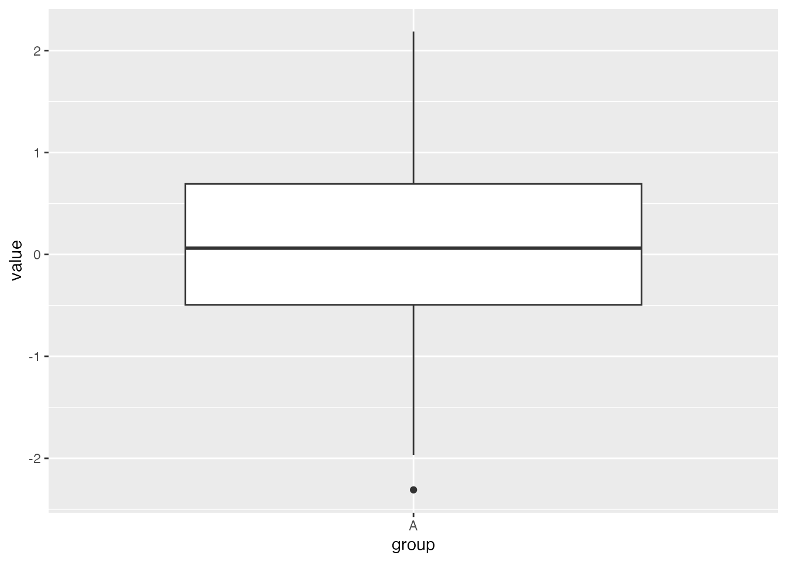
We can see from this boxplot that we have a low outlier but no high outliers.
We could also display this boxplot horizontally by adding coord_flip() to the command:
ggplot(df_A, aes(x = group, y = value)) +
geom_boxplot() +
coord_flip()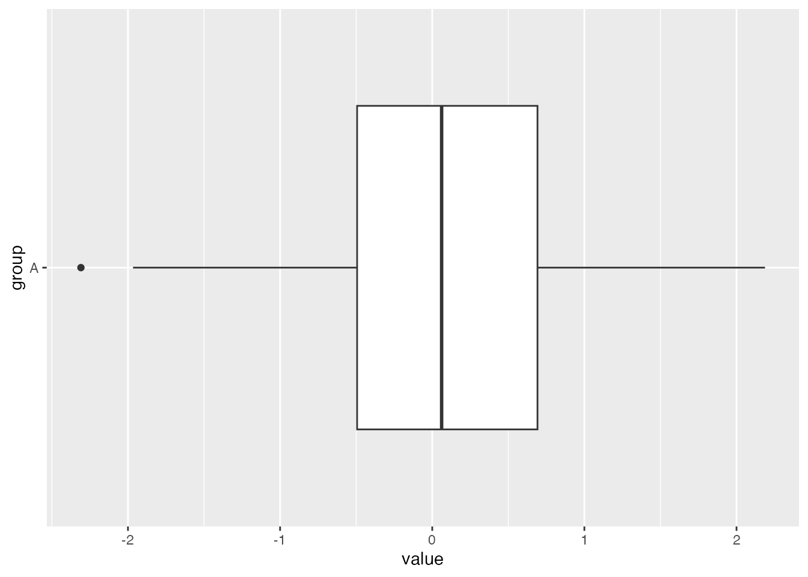
We are now ready to move on to more advanced ideas for a boxplot.
Boxplot with a Jitter Strip
One way to enhance a boxplot is to add a jitter strip to the visualization. This shows the points from the data set and can help to see the density of the data points more clearly. Here is an example of a boxplot with jitter using ggplot:
# Create a boxplot with jitter
ggplot(df_A, aes(x = group, y = value)) +
geom_boxplot() +
coord_flip() +
geom_jitter(width = 0.2)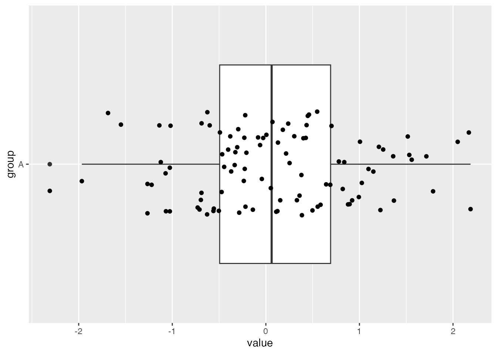
Remember we are dealing with a single variable, so technically all of these points should be on a straight line. However, the jitter strip helps us to see the density of the data points more clearly by spacing (“jittering”) them out.
Colors and Alpha Level
You can also change the colors of the boxplot. Here is an example of how to change the color of the interior of the boxplot to light blue, as well as how to make an outlier stand out by changing its color.
# Create a boxplot with a different fill color
ggplot(df_A, aes(x = group, y = value)) +
geom_boxplot(fill = "lightblue", outlier.colour = "red") +
coord_flip()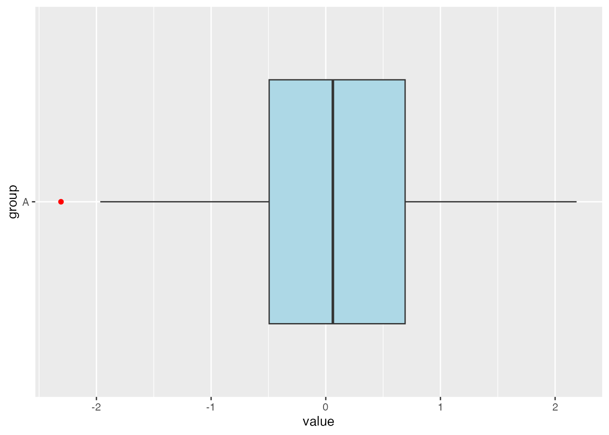
From here we could add a jitter strip with a different color. Here is an example of how to change the color of the jitter strip to red:
# Create a boxplot with a different fill color and a jitter strip with a different color
ggplot(df_A, aes(x = group, y = value)) +
geom_boxplot(fill = "lightblue") +
coord_flip() +
geom_jitter(width = 0.2, color = "red")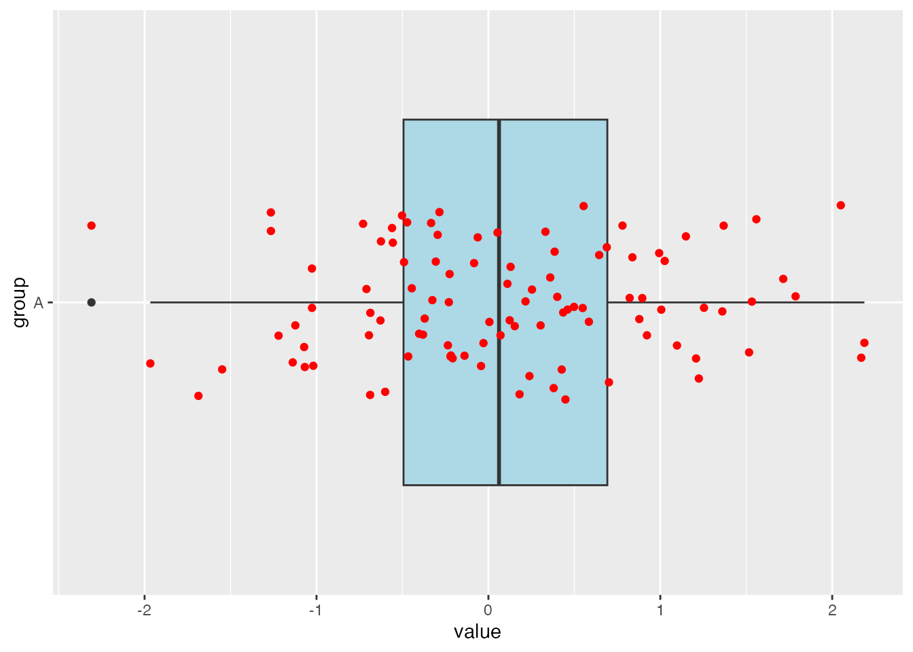
If the points have a lot of overlap, they can start to bunch together into a blob and you can’t tell how many points are there. To help combat this, you can change what is called the “alpha level” of the points. This basically changes how transparent the will be. This level can be between 0 and 1 where 0 is basically invisible and 1 is completely solid. Here is an example with the alpha levels at 0.5 :
# Create a boxplot with a different fill color and a jitter strip with a different color
ggplot(df_A, aes(x = group, y = value)) +
geom_boxplot(fill = "lightblue") +
coord_flip() +
geom_jitter(width = 0.2, color = "red", alpha = 0.5)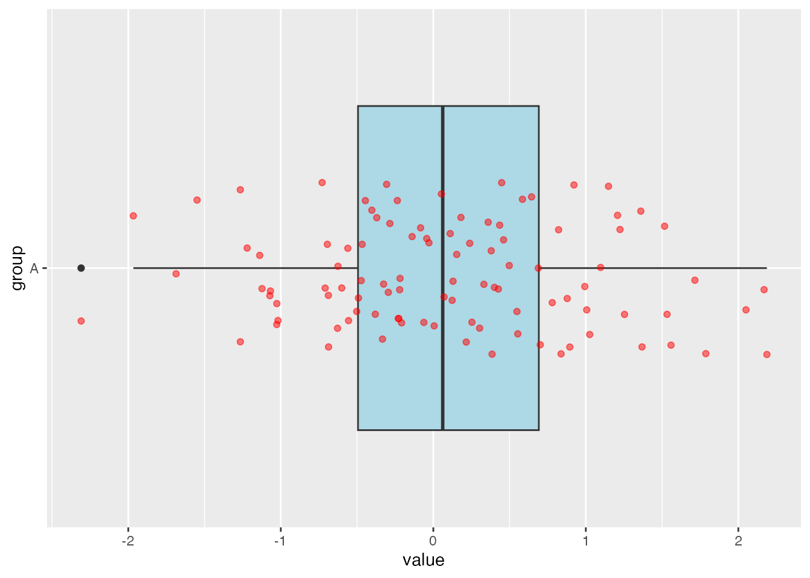
Notice how the points are much lighter than the previous picture. When points start to overlap each other, that is when you will notice the points are becoming darker. The more points that overlap, the darker the overlap will be.
Labels
You can also add labels to the boxplot. These will help the reader better understand the data. Here is an example of how to add labels to the boxplot:
# Create a boxplot with labels
ggplot(df_A, aes(x = group, y = value)) +
geom_boxplot(fill = "lightblue") +
coord_flip()+
labs(title = "Boxplot with Jitter Strip",
subtitle = "Add a subtitle here",
x = "Group",
y = "Value")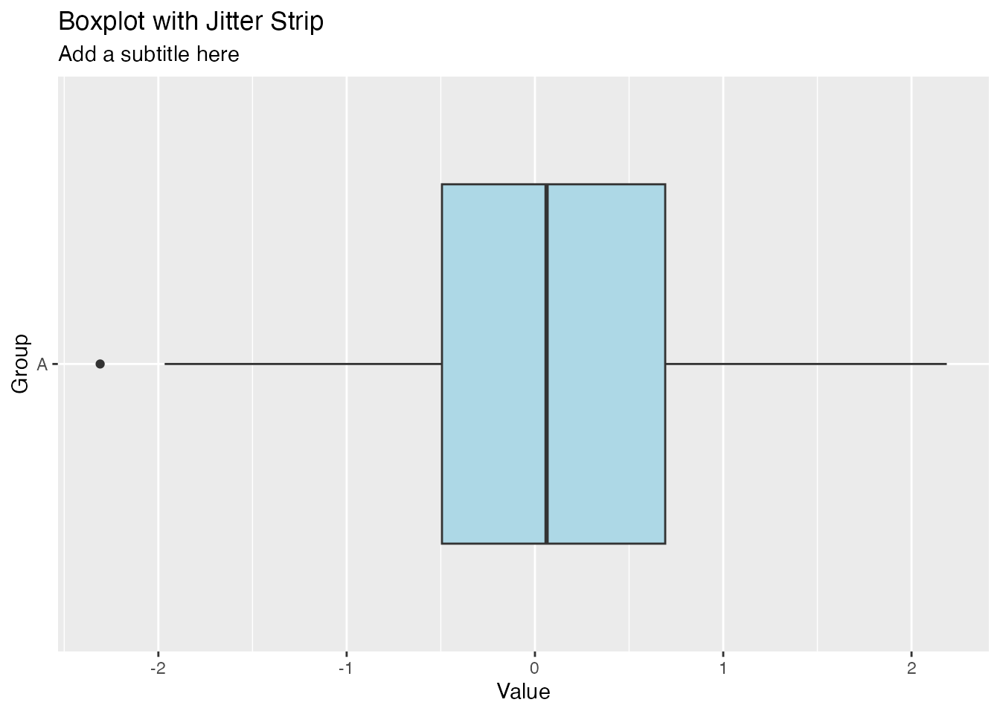
This command adds several labels using the labs( ) layer:
- Added the title at the top of the boxplot
- Added a subtitle beneath the title
- Added the x-axis label
- Added the y-axis label
We will look at an example in a bit from a data set that has actual data and we will see how to add meaningful labels to the boxplot.
Values on the Boxplot
A boxplot is a very nice visualzation of the data, but the reader can’t always tell the exact values for the important values of the boxplot. It would be nice to have the values for Q1, Q3, etc., listed on the boxplot.
Here is an example of how to add the values to the boxplot:
# Compute Quartiles
q1 <- quantile(df_A$value, 0.25)
q2 <- quantile(df_A$value, 0.50) # Median
q3 <- quantile(df_A$value, 0.75)
# Boxplot with Custom Legend
ggplot(df_A, aes(y = value)) +
geom_boxplot(fill = "lightblue") +
geom_text(aes(x = 0.5, y = q1, label = paste("Q1: ", round(q1, 2))), vjust = 1.5) +
geom_text(aes(x = 0.5, y = q2, label = paste("Q2: ", round(q2, 2))), vjust = -0.5) +
geom_text(aes(x = 0.5, y = q3, label = paste("Q3: ", round(q3, 2))), vjust = 1.5) +
coord_flip()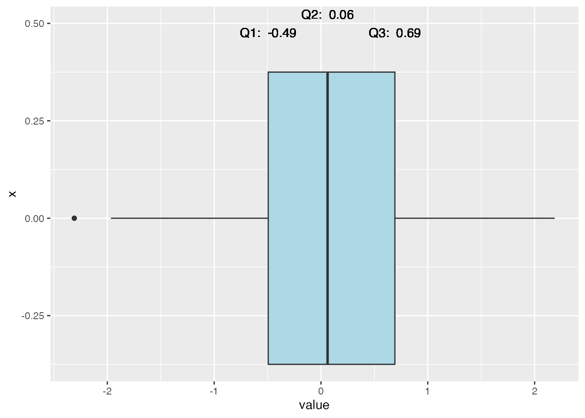
In this example, we used the geom_text( ) layer to add the values for Q1, Q2, and Q3 to the boxplot. We used the vjust argument to adjust the vertical position of the text.
- x = 0.5 : This tells us to have the text start at the height of the boxplot where x = 0.5
- y = q1 : This tells us to start the text at the value of q1 which was calculated above
- label = paste(“Q1:”, round(q1, 2)) : This tells us to label the text as “Q1:” and then the value of q1 rounded to 2 decimal places
- vjust = 1.5 : This tells us to adjust the vertical position of the text so that it is 1.5 units above the boxplot
Note that since these values are so close together, I had to adjust the vertical position of the text so that they would not overlap. This is why I used the vjust argument to adjust the vertical position of the text.
Adding Data Points to the Boxplot
You can also add the values of the data points to the boxplot. This can be useful when you want to see the actual values of the data points, BUT this is not always a good idea. If there are many points, then this will probably all just run together. For instance, we COULD do this for our current data set, but it really wouldn’t be helpful. Here is an example of how to add the values to the boxplot:
# Create a boxplot with values
ggplot(df_A, aes(x = group, y = value)) +
geom_boxplot(fill = "lightblue") +
coord_flip() +
geom_text(aes(label = value), vjust = -0.5)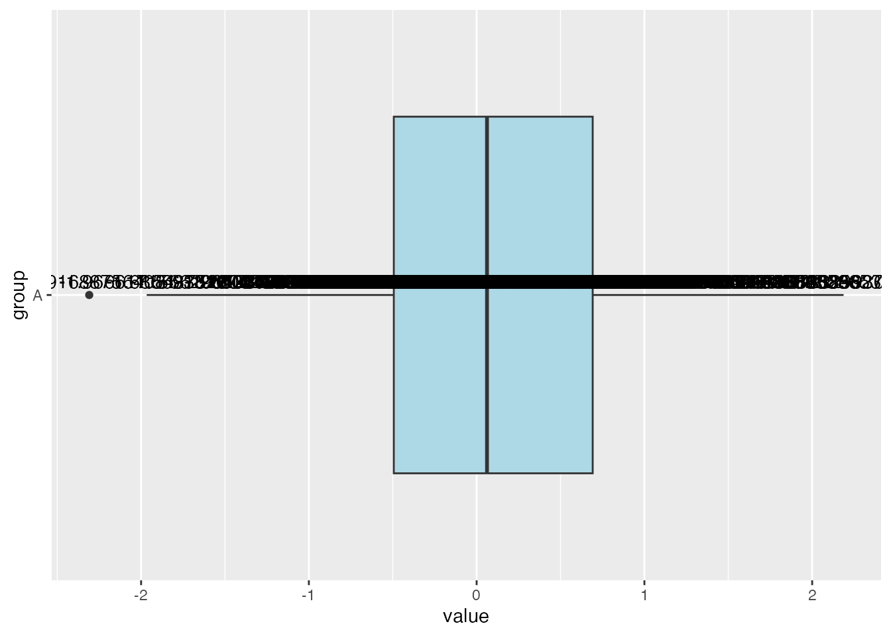
Notice that they all just run together and don’t really help our understanding of the data set at all.
Here is an example of a small data set where the points are spread out where this might be helpful:
# Create a data frame with 8 random values from 1 to 100
set.seed(98) # Set seed for reproducibility
df_small <- data.frame(value = sample(1:100, 8))
# Create a boxplot
ggplot(df_small, aes(x = factor(1), y = value)) +
geom_boxplot(fill = "lightblue") + # Boxplot
geom_text(aes(label = value), vjust = -0.5, color = "blue") + # Add labels on each point
theme_minimal() +
coord_flip() +
labs(title = "Boxplot with Labels", x = "", y = "Value") +
theme(axis.text.x = element_blank(), axis.ticks.x = element_blank()) # Hide x-axis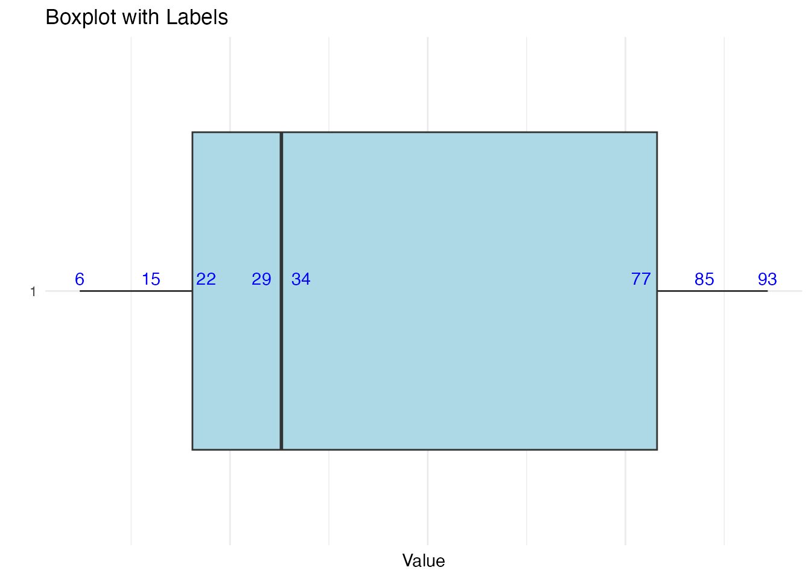
As you can imagine, once you get a data set with 10 or more points, this really isn’t going to be useful. The best options are to include the important values as we did above or perhaps create a table summarizing the values.
Multiple Boxplots On One Graph
Let’s go back to our original example of the data frame that had three variables and see how we could put these on the same graph.
Here is how we could create a boxplot for our. variable df.
# Set the seed for reproducibility
set.seed(123)
# Create a data frame
df <- data.frame(
group = rep(c("A", "B", "C"), each = 100),
value = c(rnorm(100), rnorm(100, mean = 1), rnorm(100, mean = 2))
)
# Create a boxplot using ggplot
ggplot(df, aes(x = group, y = value)) +
geom_boxplot()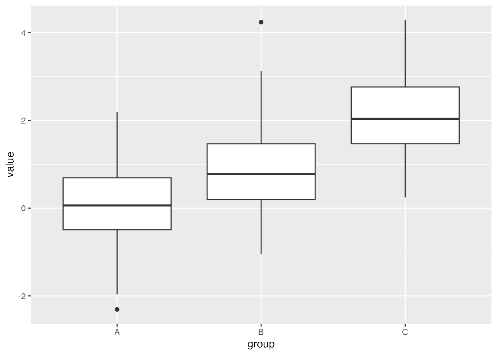
We could then start to fancy this up using some of the commands we saw earlier.
ggplot(df, aes(x = group, y = value, fill = group)) +
geom_boxplot() +
labs(title = "Boxplot of Values by Group", x = "Group", y = "Value") +
scale_fill_manual(values = c("A" = "skyblue", "B" = "lightgreen", "C" = "lightcoral")) # Custom colors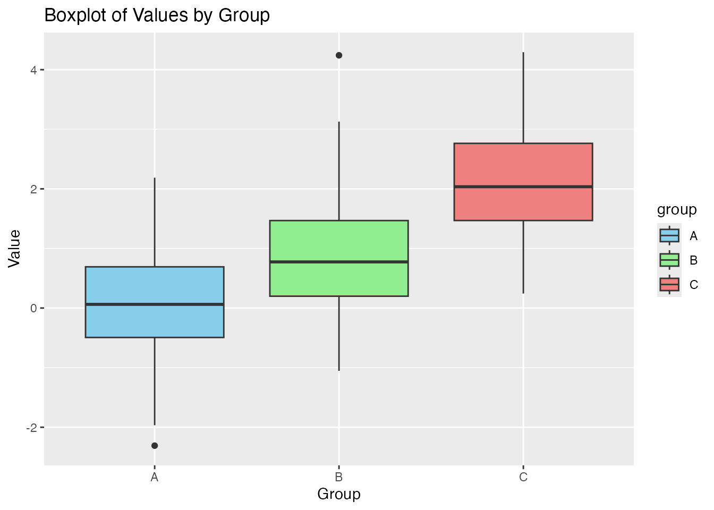
Notice that we can specify the colors for the boxplots by changing our choices for the fill option.
Here is what they look like with a jitter strip :
ggplot(df, aes(x = group, y = value, fill = group)) +
geom_boxplot() +
labs(title = "Boxplot of Values by Group", x = "Group", y = "Value") +
geom_jitter() +
scale_fill_manual(values = c("A" = "skyblue", "B" = "lightgreen", "C" = "lightcoral")) # Custom colors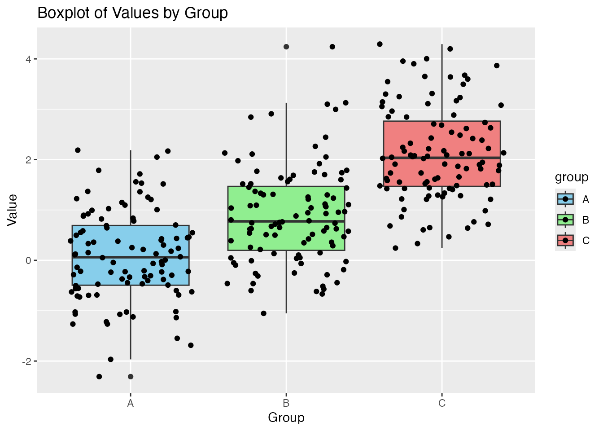
Meaningful Example
Let us turn our attention to an example that has more meaning than a data set full of random values. Let’s do a little EDA as we look at the poverty levels of families in the state of Kentucky where they are measured by county.
The data is located in the file KY-Poverty-Levels-By-County.csv. Let’s read this file into R.
# Make sure we have the proper library loaded up :
library(readr)
# Read in the csv file into the variable KY_data
KY_data <- read_csv("./KY-Poverty-Levels-By-County.csv")Rows: 120 Columns: 4
── Column specification ────────────────────────────────────────────────────────
Delimiter: ","
chr (1): County
dbl (2): Value_Percent, Families_Below_Poverty
num (1): Rank_within_US_of_3143 _counties
ℹ Use `spec()` to retrieve the full column specification for this data.
ℹ Specify the column types or set `show_col_types = FALSE` to quiet this message.If we look at the output from when we first read in the data set, our data set has 120 rows and 4 columns. That means we have 4 variables (listed below) that we are measuring and 120 observations.
Let’s first take a quick look at the beginning and end of the data set :
head(KY_data)# A tibble: 6 × 4
County Value_Percent Families_Below_Poverty Rank_within_US_of_3143 …¹
<chr> <dbl> <dbl> <dbl>
1 Knox County 29.6 2204 3126
2 Wolfe County 29.2 465 3124
3 McCreary County 26.5 917 3111
4 Clay County 26.1 1342 3109
5 Magoffin County 25 746 3098
6 Harlan County 24.9 1775 3097
# ℹ abbreviated name: ¹`Rank_within_US_of_3143 _counties`tail(KY_data)# A tibble: 6 × 4
County Value_Percent Families_Below_Poverty Rank_within_US_of_3143 …¹
<chr> <dbl> <dbl> <dbl>
1 Nelson County 5.9 750 611
2 Woodford County 5.7 429 560
3 Shelby County 5.1 652 408
4 Spencer County 3.8 214 178
5 Boone County 3.1 1096 93
6 Oldham County 3 547 84
# ℹ abbreviated name: ¹`Rank_within_US_of_3143 _counties`Based on the first (head) and last (tail) six lines of the data set, it looks like we have the following information :
- County Name
- The percentage of families living in poverty
- The number of families in the county living in poverty.
- Their rank out of the 3143 counties in the US
We can also take a look at the data using the summary command :
# This is base function for R so we do not have to load any additional packages
summary(KY_data) County Value_Percent Families_Below_Poverty
Length:120 Min. : 3.00 Min. : 91.0
Class :character 1st Qu.:10.85 1st Qu.: 431.2
Mode :character Median :13.60 Median : 690.0
Mean :14.39 Mean : 1116.3
3rd Qu.:17.90 3rd Qu.: 1132.5
Max. :29.60 Max. :19481.0
Rank_within_US_of_3143 _counties
Min. : 84
1st Qu.:1976
Median :2484
Mean :2294
3rd Qu.:2881
Max. :3126 From this output we can tell a bit more about the variables. We can see that the first variable is of class character, so there really isn’t any numerical analysis we can do here. However, we do see that the last three variables are all numeric, which is why we get the 5-Number summary and the mean presented to us.
What we could do next is to create a boxplot for the first numeric variable. This variable tells us the percentage of families living in poverty in their county.
ggplot(KY_data, aes(y=KY_data$Value_Percent))+
geom_boxplot() +
coord_flip()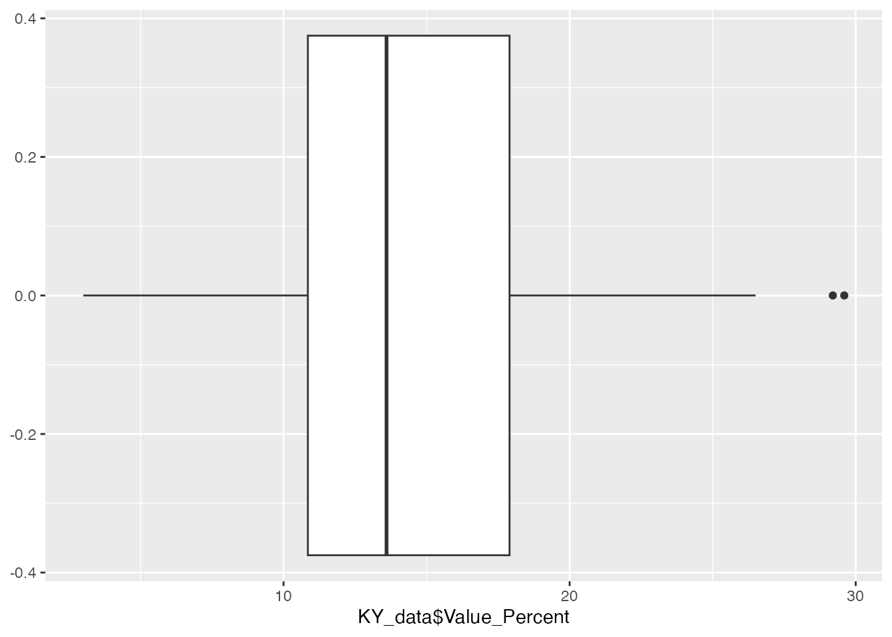
We really need to make this look better, so let’s add some labels.
ggplot(KY_data, aes(y=KY_data$Value_Percent))+
geom_boxplot() +
coord_flip() +
labs(title = "Poverty Rates for Kentucky Counties", x = "", y = "Percentage")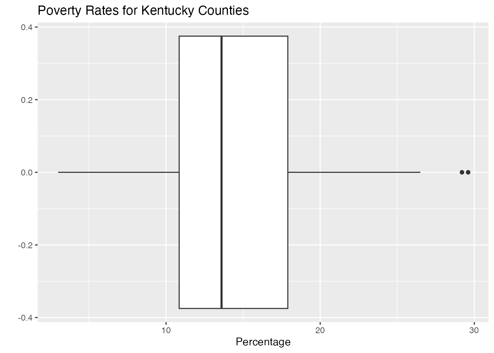
We could also add a little color :
ggplot(KY_data, aes(y=KY_data$Value_Percent))+
geom_boxplot(fill = "slategray3") +
coord_flip() +
labs(title = "Poverty Rates for Kentucky Counties", x = "", y = "Percentage")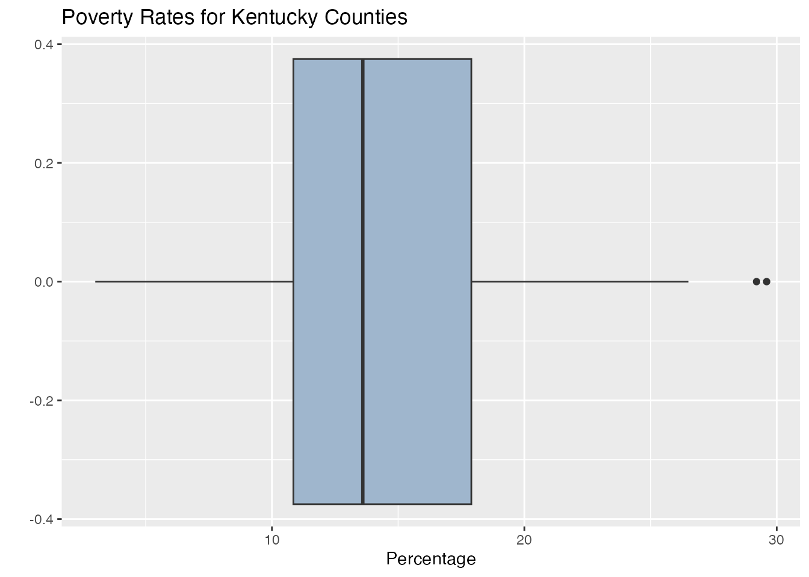
We could also add the values of the quartiles to improve the visualization.
# Compute Quartiles
q1 <- quantile(KY_data$Value_Percent, 0.25)
q2 <- quantile(KY_data$Value_Percent, 0.50) # Median
q3 <- quantile(KY_data$Value_Percent, 0.75)
# Create the boxplot
ggplot(KY_data, aes(y = KY_data$Value_Percent))+
geom_boxplot(fill = "slategray3") +
geom_text(aes(x = 0.5, y = q1, label = paste("Q1: ", round(q1, 2))), vjust = 1.5) +
geom_text(aes(x = 0.5, y = q2, label = paste("Q2: ", round(q2, 2))), vjust = -0.5) +
geom_text(aes(x = 0.5, y = q3, label = paste("Q3: ", round(q3, 2))), vjust = 1.5) +
coord_flip() +
# geom_jitter(width = 0.2, color="black") +
labs(title = "Poverty Rates for Kentucky Counties", y = "Percentage")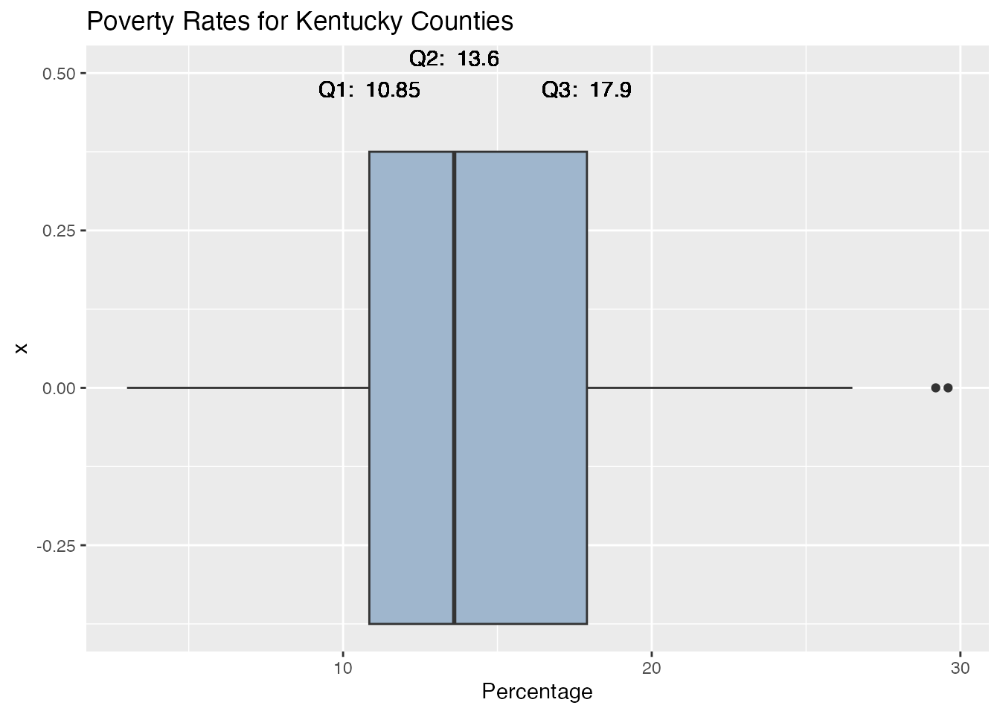
Built-In Themes
There are several different built in themes you could use to clean up your ggplot visializations. You can view several of them here :
https://r-charts.com/ggplot2/themes/
Here are a couple of examples for you. Feel free to look them up and play around a bit. We will go back to the first data set we created and mess around with that one.
# Set the seed for reproducibility
set.seed(123)
# Create a data frame
df <- data.frame(
group = rep(c("A", "B", "C"), each = 100),
value = c(rnorm(100), rnorm(100, mean = 1), rnorm(100, mean = 2))
)
# Create a boxplot using ggplot
ggplot(df, aes(x = group, y = value)) +
geom_boxplot()Let’s add a few themes to see what happens.
# Set the seed for reproducibility
set.seed(123)
# Create a data frame
df <- data.frame(
group = rep(c("A", "B", "C"), each = 100),
value = c(rnorm(100), rnorm(100, mean = 1), rnorm(100, mean = 2))
)
# Create a boxplot using ggplot
ggplot(df, aes(x = group, y = value)) +
geom_boxplot() +
theme_dark()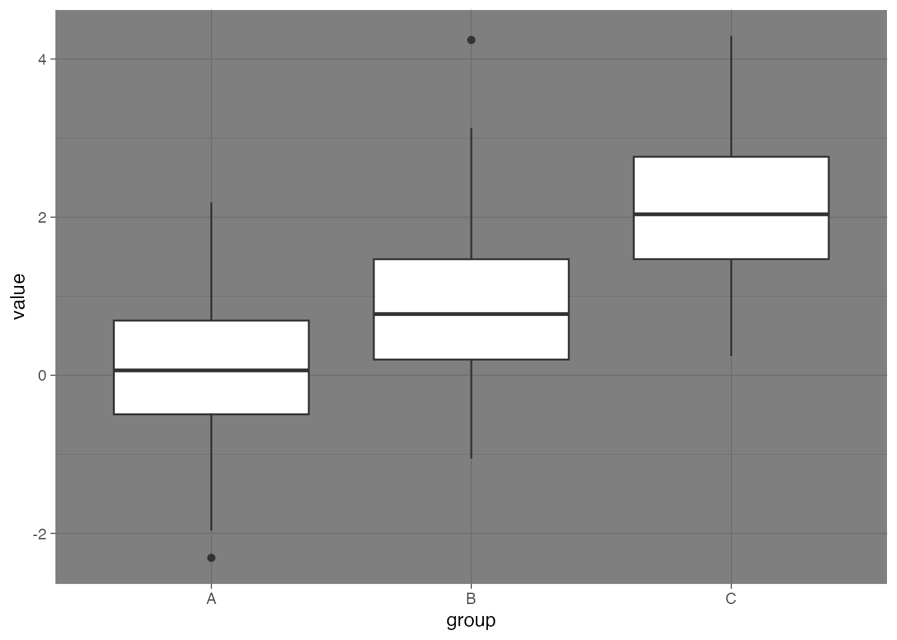
# Set the seed for reproducibility
set.seed(123)
# Create a data frame
df <- data.frame(
group = rep(c("A", "B", "C"), each = 100),
value = c(rnorm(100), rnorm(100, mean = 1), rnorm(100, mean = 2))
)
# Create a boxplot using ggplot
ggplot(df, aes(x = group, y = value)) +
geom_boxplot() +
theme_void()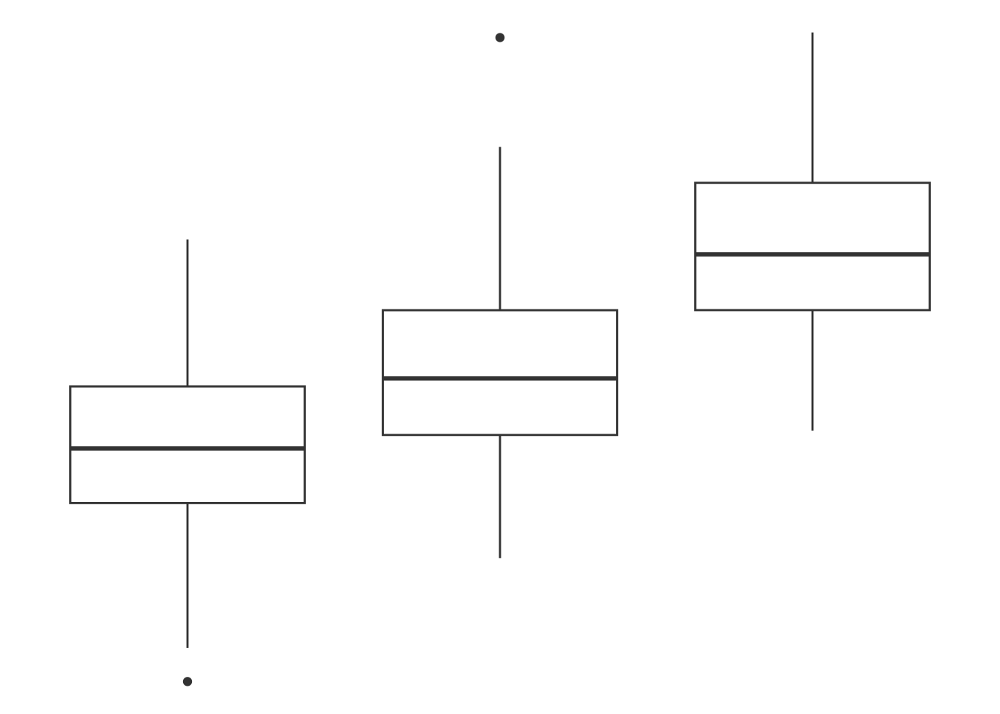
You can even download other themes. You can find several online at the link given above. Here we will download, install, and use the hrbrthemes package.
# install.packages("hrbrthemes")
library(hrbrthemes)
# This package loads up 8 themes. We will use the theme "theme_ipsum()"
ggplot(df, aes(x = group, y = value)) +
geom_boxplot() +
theme_ipsum()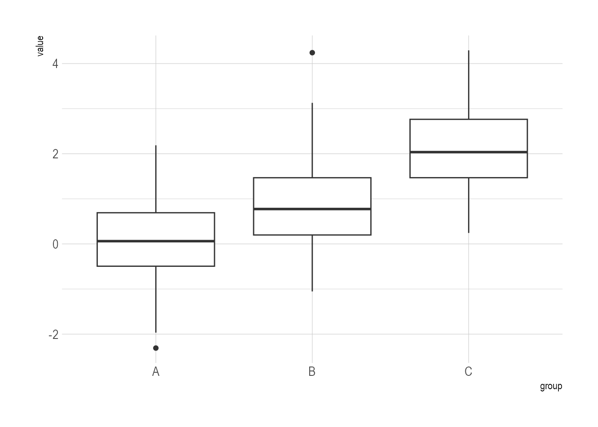
Additional Themes
There is a package we can install that contains additional themes. This is the ggthemes package.
# install.packages("ggthemes")
library(ggthemes)ggthemes contains several themes that you can use. Here is a list of some of the themes that are available :
theme_economist()theme_excel()theme_few()theme_fivethirtyeight()theme_gdocs()theme_hc()theme_solarized()theme_tufte()theme_wsj()
For example, the theme theme_economist() is based on the style of the Economist magazine, and theme_wsj() is based on the style of the Wall Street Journal.
You can find more information about these themes at the following link :
https://jrnold.github.io/ggthemes/
Here is an example of how to use the theme_economist() theme :
ggplot(df, aes(x = group, y = value)) +
geom_boxplot() +
theme_economist()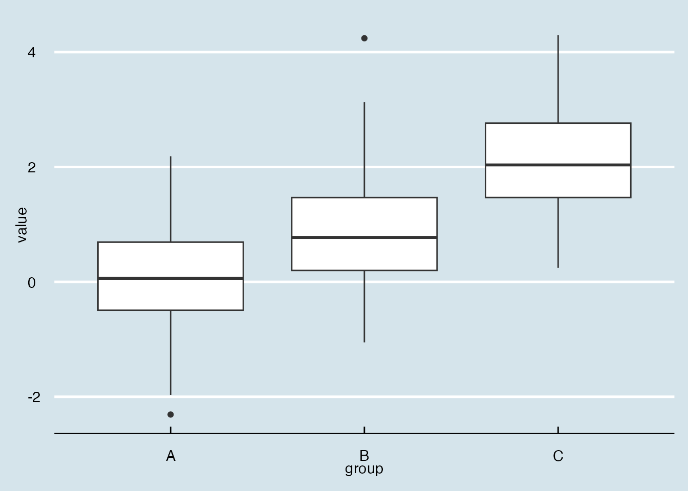
Here is an example of how to use the theme_wsj() theme :
ggplot(df, aes(x = group, y = value)) +
geom_boxplot() +
theme_wsj()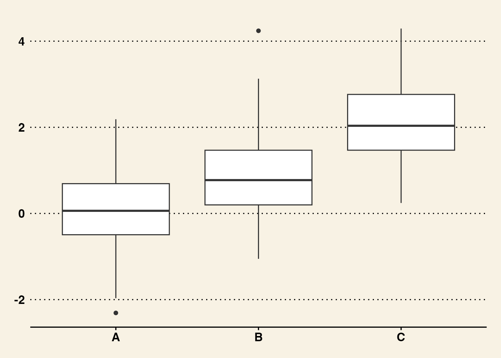
Feel free to play around with these themes as you are working through your visualizations. Find one that you feel is a good fir for your data and your presentation.
For more information about boxplots, here is a useful webpage :
https://www.appsilon.com/post/ggplot2-boxplots
Exercises
In this assignment, you will practice creating different types of boxplots using the ggplot2 library in R. You will use built-in datasets from R for this assignment. The problems vary in difficulty from basic boxplots to more advanced plots with additional customization.
Problem 1: Basic Boxplot of Sepal Length in the iris Dataset
Task: Create a basic boxplot of the Sepal.Length column in the iris dataset.
Steps:
- Load the
irisdataset. - Create a boxplot using
ggplot2.
Code Example:
# Load ggplot2 and iris dataset
library(ggplot2)
data(iris)
# Create boxplot
ggplot(iris, aes(y = Sepal.Length)) +
geom_boxplot() +
labs(title = "Boxplot of Sepal Length in Iris Dataset", y = "Sepal Length")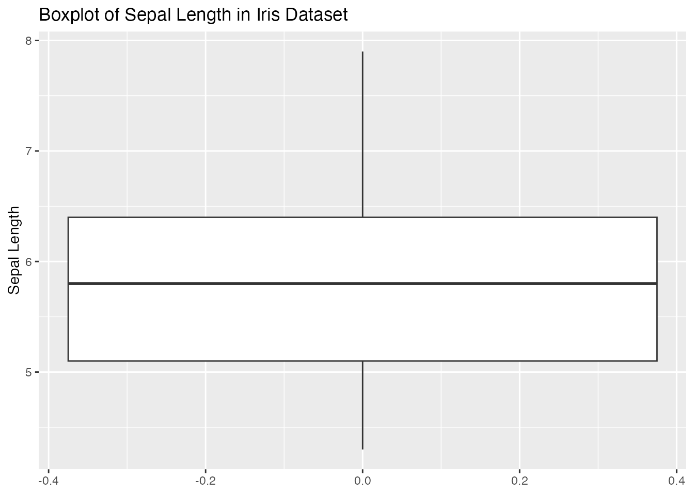
Problem 2: Boxplot of Sepal Length by Species in the iris Dataset
Task: Create a boxplot of the Sepal.Length column grouped by Species in the iris dataset.
Steps:
- Load the
irisdataset. - Create a grouped boxplot using
ggplot2.
Code Example:
# Load ggplot2 and iris dataset
library(ggplot2)
data(iris)
# Create boxplot
ggplot(iris, aes(x = Species, y = Sepal.Length)) +
geom_boxplot() +
labs(title = "Boxplot of Sepal Length by Species in Iris Dataset", x = "Species", y = "Sepal Length")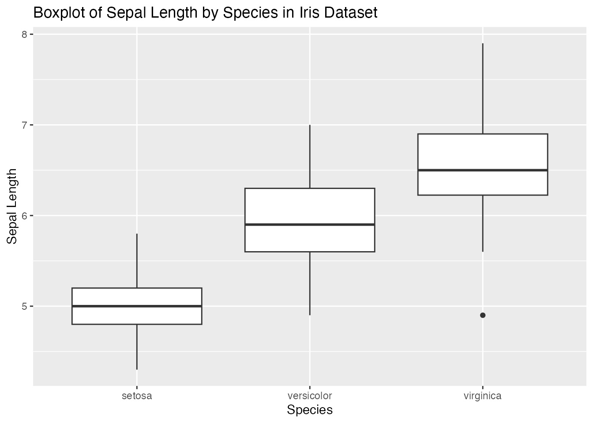
Problem 3: Boxplot of Tooth Length in the ToothGrowth Dataset
Task: Create a boxplot of the len column in the ToothGrowth dataset and add color to the boxes.
Steps: 1. Load the ToothGrowth dataset. 2. Create a colored boxplot using ggplot2.
Code Example:
# Load ggplot2 and ToothGrowth dataset
library(ggplot2)
data(ToothGrowth)
# Create boxplot with color
ggplot(ToothGrowth, aes(y = len, fill = supp)) +
geom_boxplot() +
labs(title = "Boxplot of Tooth Length in ToothGrowth Dataset", y = "Tooth Length") +
scale_fill_manual(values = c("VC" = "blue", "OJ" = "orange"))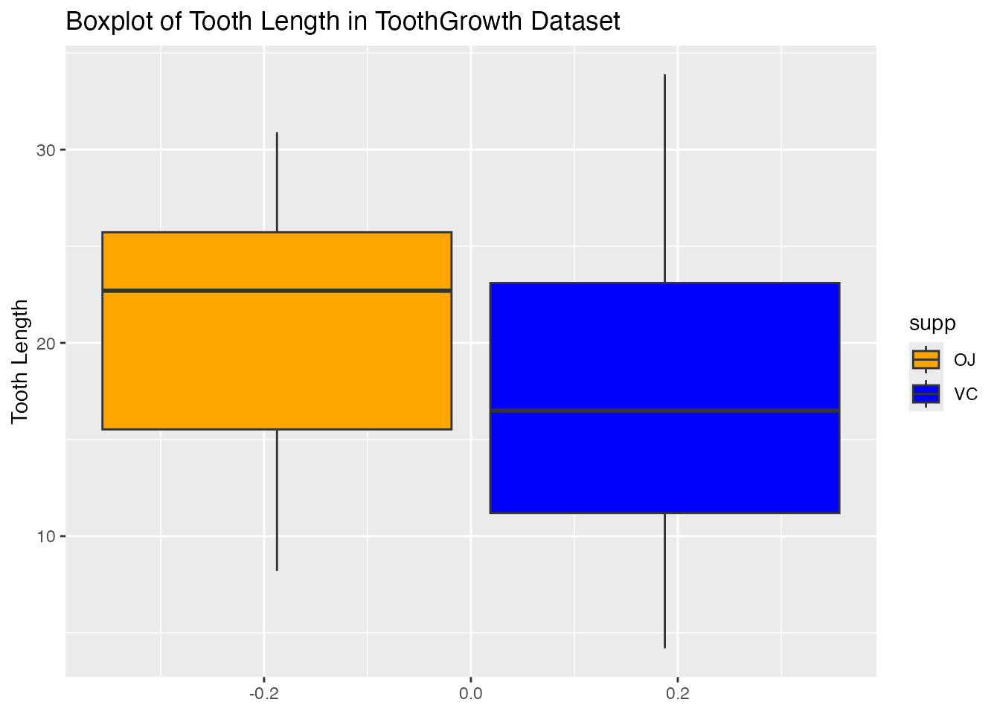
Problem 4: Boxplot with Points of Wind Speed in the airquality Dataset
Task: Create a boxplot of the Wind column in the airquality dataset and add points to it.
Steps:
- Load the
airqualitydataset. - Create a boxplot with points using
ggplot2.
Code Example:
# Load ggplot2 and airquality dataset
library(ggplot2)
data(airquality)
# Create boxplot with points
ggplot(airquality, aes(x="", y = Wind)) +
geom_boxplot() +
geom_jitter(position = position_jitter(width = 0.2), alpha = 0.5) +
labs(title = "Boxplot of Wind Speed in Airquality Dataset", y = "Wind Speed")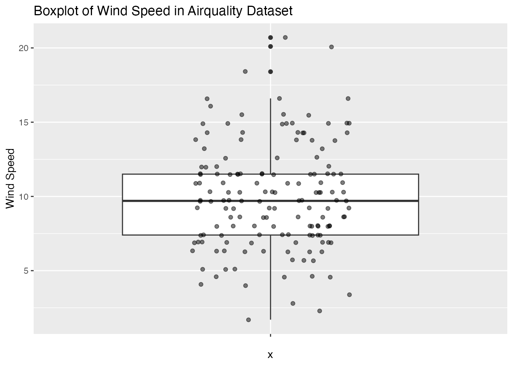
Problem 5: Boxplot of Annual Lynx Trappings in the lynx Dataset with Changed Alpha Levels
Task: Create a boxplot of the annual number of lynx trapped in the lynx dataset and change the alpha levels for the points.
Steps:
- Load the
lynxdataset. - Create a boxplot with changed alpha levels using
ggplot2.
Code Example:
# Load ggplot2 and lynx dataset
library(ggplot2)
data(lynx)
# Create boxplot with changed alpha levels
ggplot(data.frame(lynx), aes( x="", y = lynx)) +
geom_boxplot() +
geom_point(position = position_jitter(width = 0.2), alpha = 0.3) +
labs(title = "Boxplot of Annual Lynx Trappings", y = "Number of Lynx Trapped")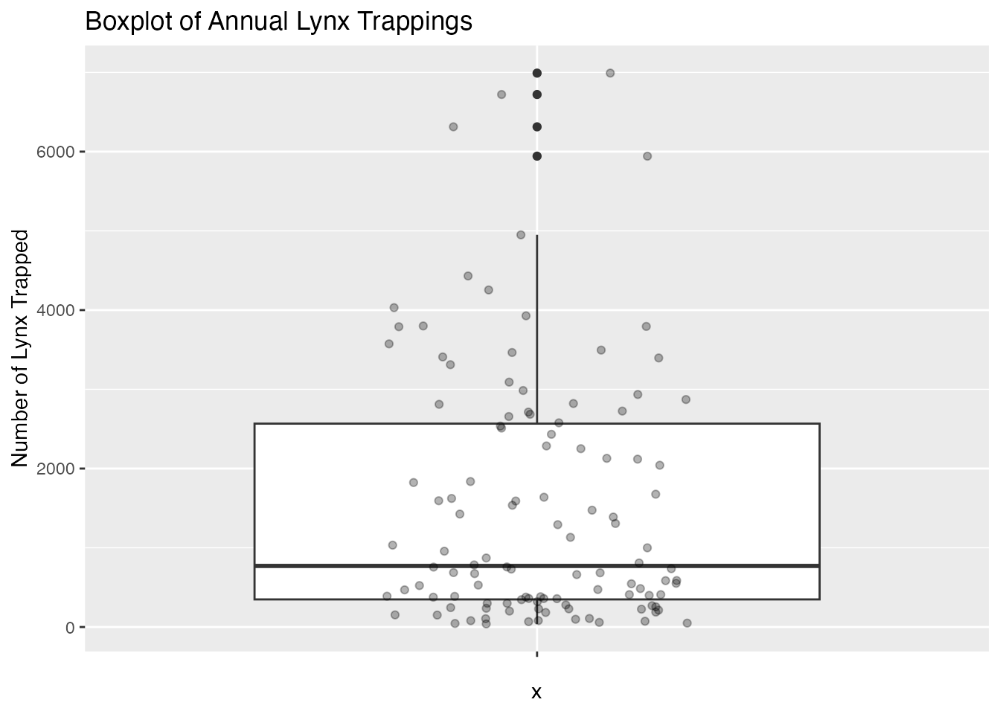
Problem 6: Boxplot with Jitterstrip of Age in the infert Dataset
Task: Create a boxplot of the age column in the infert dataset and add a jitterstrip.
Steps:
- Load the
infertdataset. - Create a boxplot with jitterstrip using
ggplot2.
Code Example:
# Load ggplot2 and infert dataset
library(ggplot2)
data(infert)
# Create boxplot with jitterstrip
ggplot(infert, aes(x="", y = age)) +
geom_boxplot() +
geom_jitter(width = 0.2, alpha = 0.5) +
labs(title = "Boxplot of Age in Infert Dataset", y = "Age")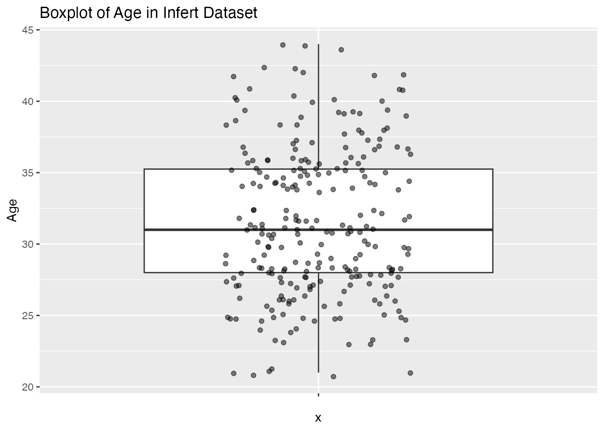
Problem 7: Boxplot with Labels of Sepal Width in the iris Dataset
Task: Create a boxplot of the Sepal.Width column in the iris dataset and add labels to the plot.
Steps:
- Load the
irisdataset. - Create a boxplot with labels using
ggplot2.
Code Example:
# Load ggplot2 and iris dataset
library(ggplot2)
data(iris)
# Create boxplot with labels
ggplot(iris, aes(y = Sepal.Width)) +
geom_boxplot() +
labs(title = "Boxplot of Sepal Width in Iris Dataset", y = "Sepal Width", x = "Species") +
theme(axis.text.x = element_text(angle = 45, hjust = 1))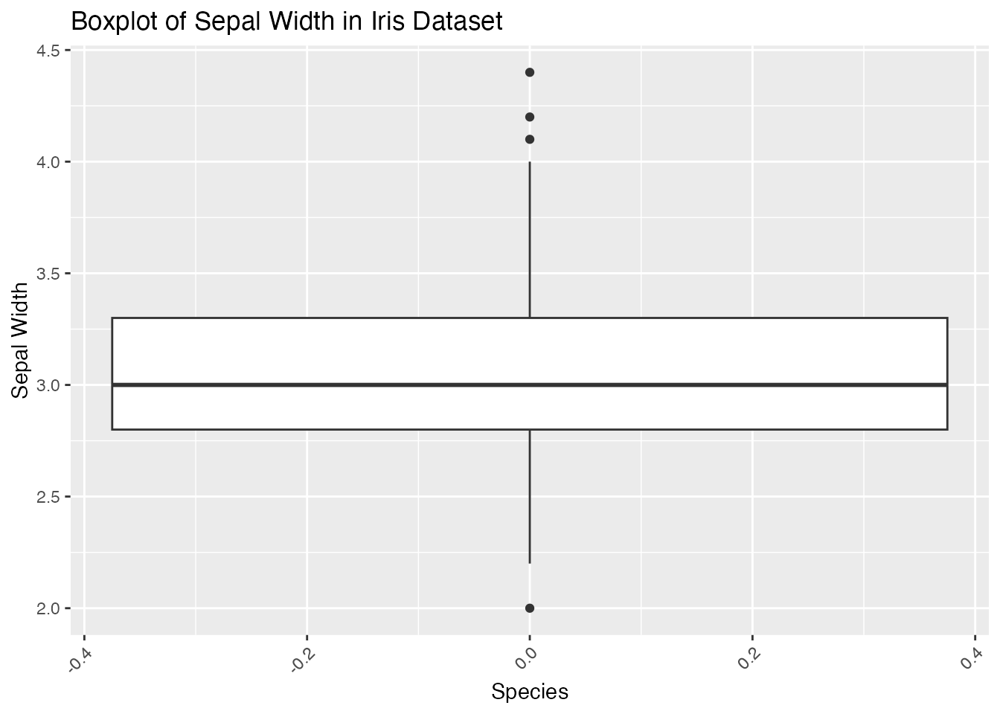
Problem 8: Multiple Boxplots on One Graph for Tooth Length by Supplement and Dose in the ToothGrowth Dataset
Task: Create multiple boxplots on one graph for the len column by supp and dose in the ToothGrowth dataset.
Steps:
- Load the
ToothGrowthdataset. - Create multiple boxplots using
ggplot2.
Code Example:
# Load ggplot2 and ToothGrowth dataset
library(ggplot2)
data(ToothGrowth)
# Create multiple boxplots
ggplot(ToothGrowth, aes(x = factor(dose), y = len, fill = supp)) +
geom_boxplot() +
labs(title = "Boxplot of Tooth Length by Supplement and Dose in ToothGrowth Dataset", x = "Dose", y = "Tooth Length") +
scale_fill_manual(values = c("VC" = "blue", "OJ" = "orange"))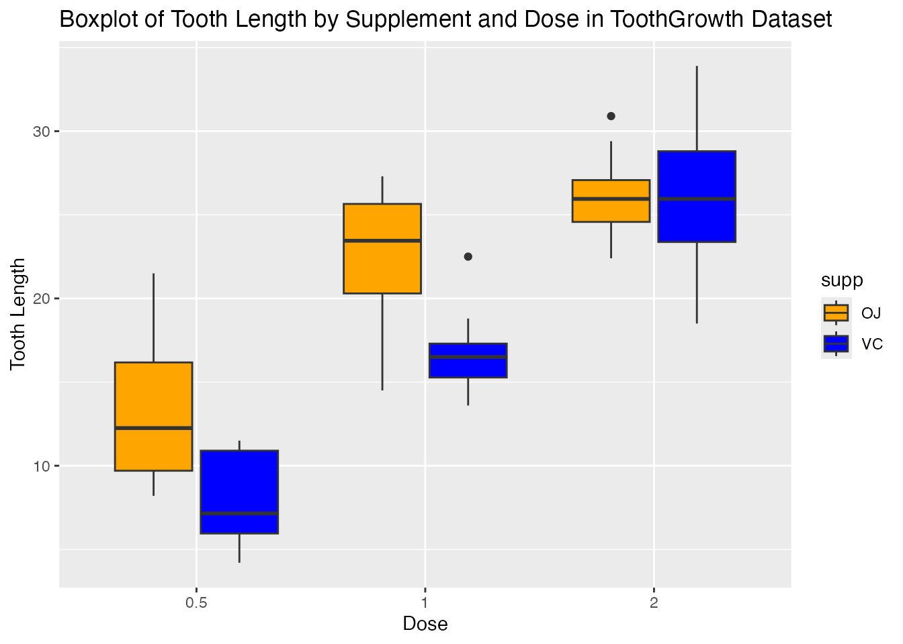
Problem 9: Boxplot with Custom Colors of Wind Speed in the airquality Dataset
Task: Create a boxplot of the Wind column in the airquality dataset and apply custom colors to the boxplot.
Steps:
- Load the
airqualitydataset. - Create a boxplot with custom colors using
ggplot2.
Code Example:
# Load ggplot2 and airquality dataset
library(ggplot2)
data(airquality)
# Create boxplot with custom colors
ggplot(airquality, aes(y = Wind, fill = factor(Month))) +
geom_boxplot() +
labs(title = "Boxplot of Wind Speed in Airquality Dataset", y = "Wind Speed", fill = "Month") +
scale_fill_brewer(palette = "Set3")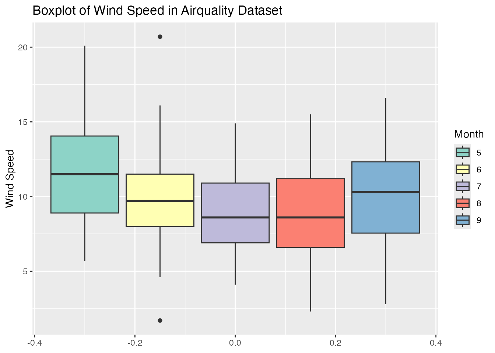
Problem 10: Boxplot with Facets of Sepal Length by Species in the iris Dataset
Task: Create a boxplot of the Sepal.Length column by Species in the iris dataset and use facets to separate the plots by species.
Steps:
- Load the
irisdataset. - Create a boxplot with facets using
ggplot2.
Code Example:
# Load ggplot2 and iris dataset
library(ggplot2)
data(iris)
# Create boxplot with facets
ggplot(iris, aes(x = Species, y = Sepal.Length)) +
geom_boxplot() +
facet_wrap(~ Species) +
labs(title = "Boxplot of Sepal Length by Species in Iris Dataset", x = "Species", y = "Sepal Length")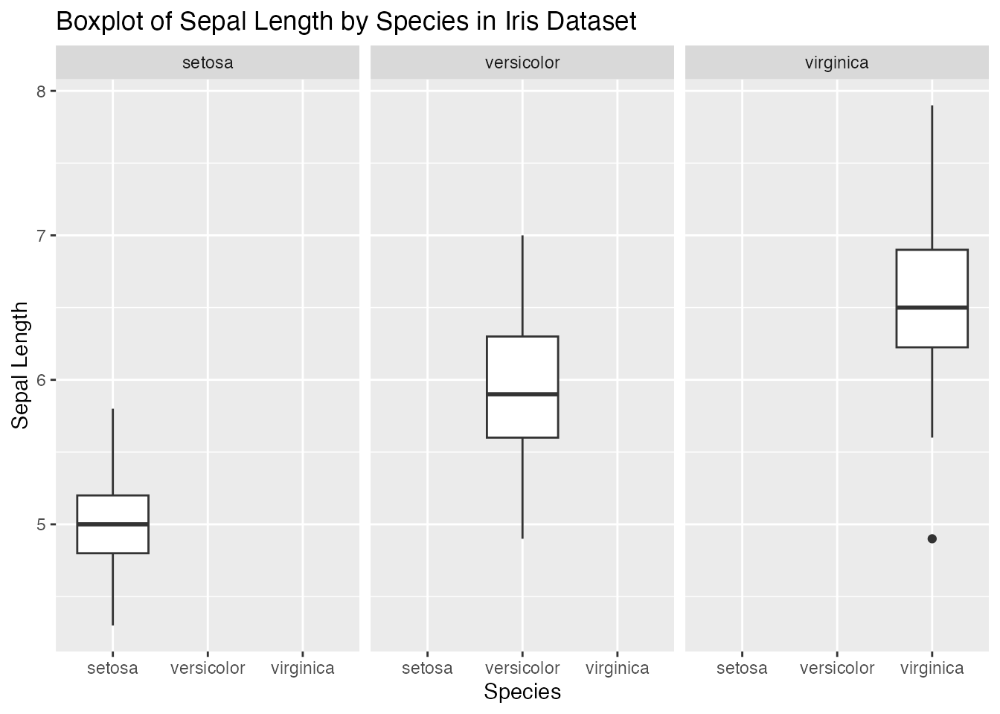